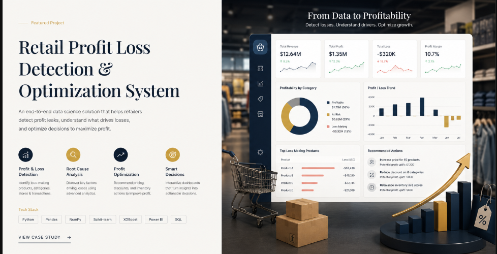
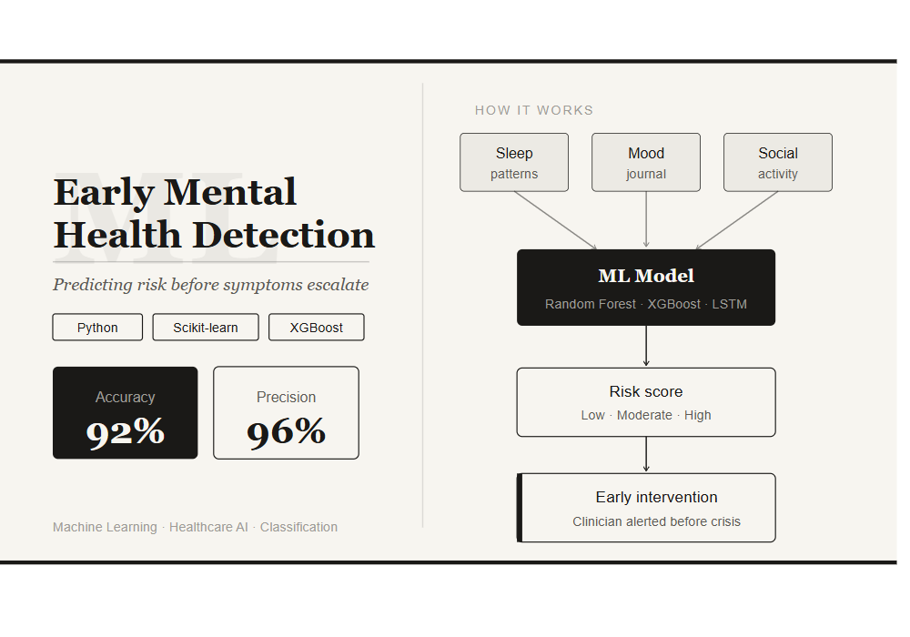

Projects
Retail Profit Loss Detection & Optimization System

Overview
Retailers lose significant margin to undetected inefficiencies in pricing, inventory, and returns — often discovered only after the damage is done. This project develops a supervised machine learning system that ingests transactional sales data, cost structures, and discount patterns to classify each business unit as profitable, at-risk, or loss-making in real time. XGBoost emerged as the best-performing model with 92% accuracy and 92% recall, ensuring loss events are rarely missed. SHAP explainability translates model outputs into actionable margin recommendations that non-technical stakeholders can act on directly.
Built an end-to-end data-driven system to analyze retail sales performance and identify profit and loss patterns for better business decision-making.
- Cleaned and processed retail sales, cost, and profit data for analysis
- Performed exploratory data analysis (EDA) to uncover trends in sales, profit margins, and loss-making products
- Engineered business-focused features such as profitability segments, product performance, and seasonal impact
- Developed predictive models to detect loss-making products and estimate profitability
- Optimized model performance using hyperparameter tuning techniques
- Built an interactive Power BI dashboard for visual insights and actionable business recommendations
Early Mental Health Prediction using Machine Learning

Overview
Mental health conditions affect 1 in 4 people globally, yet most cases go undetected until a crisis point. This project builds a deep learning pipeline that analyses behavioural signals — sleep irregularity, social withdrawal, and mood patterns — to predict mental health risk before clinical symptoms escalate. An Ensemble model captures temporal dependencies in patient behaviour, achieving 92% accuracy and 96% precision, minimising false positives that could cause unnecessary alarm. The work demonstrates how responsible AI can augment early clinical screening at scale.
Built end-to-end project to predict mental health risks using behavioral and social indicators.
- Performed data wrangling, EDA and data preprocessing
- Built classification models and performed hyperparameter tuning
- Deployed the model using streamlit